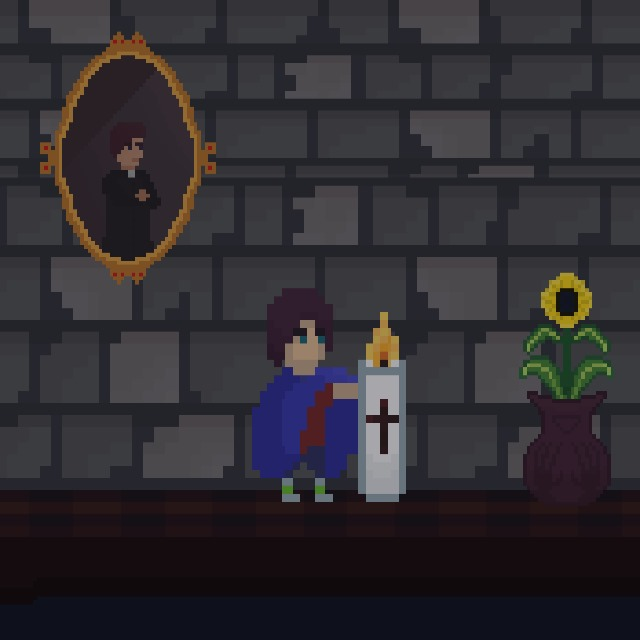

Nosso projeto se trata de um jogo de plataforma com actos de combate, e leva uma temática de caça-fantasmas. sua jogabilidade leva como referência os jogos katana zero e hollow knight.
A historia de candle exorcism se passa em uma casa de freiras, onde um conhecido padre exorcista administra o lugar, e também acolhe uma criança órfã como um filho adotivo.
Em uma de suas viagens para expurgar espiritos, o padre deixa a mansão. na noite seguinte o garoto acorda no meio da noite no porão da grande casa ao lado de uma vela.
Pouco depois, ele descobre que a mansão foi tomada por espíritos vingativos que buscam caçar o padre que os exorcizou.